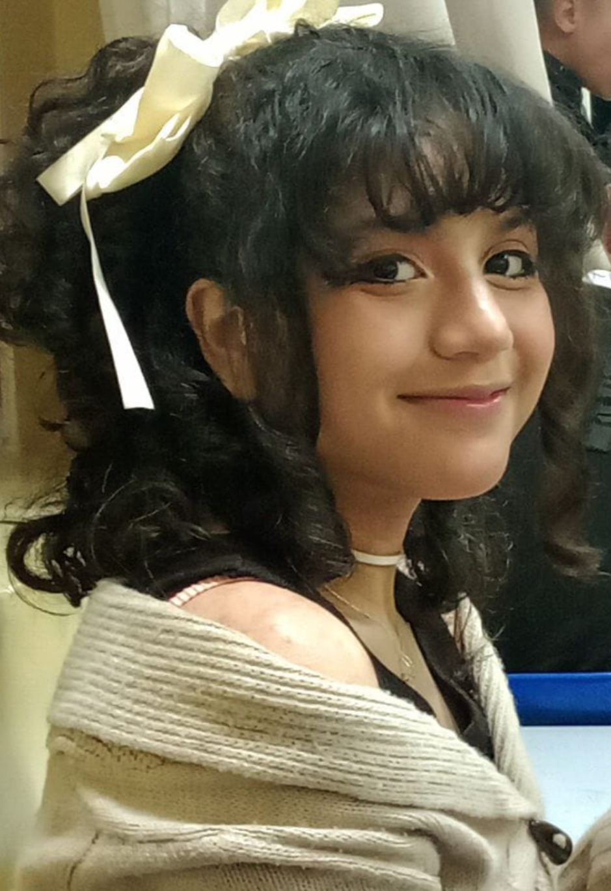
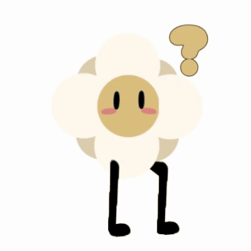

NOME: Rihanna Isabel Pena da Silva
IDADE: 16 anos
TURMA: 2DDS
SOBRE MIM: Eu sou uma pessoa bem quieta e tambem sou estressa com algumas coisas
gosto muita de jogos de aventura e de ritmo, sempere quis tacor piano,
tamben gosto de muitas animações e séries, sempre tiver interesse em progamação

Eu tenho só três amigas na sala.
Eu sou de Manaus Amazonas e me mudei para o parana ja faz 2 anos.
Uma das minhas das comidas favoritas e lasanha e a que menos gosto e vatápa.
Nunca gostei de lugares com muito barulho, então a escola pra min não tão legal.
Sempre quis aprender libras pra não fala.
A minha música favorita e "you are an idiot!"https://youtu.be/hiRacdl02w4?si=7sgevbIGL73Tl86l
gosto dela porque a batida e legal ,eu ja passei horas ouvindo.

Eu faço esse curso por que sempre gostei dessa área e quero seguir essa área,
sempre quis desenvolver meus próprios sites e jogos, sou apaixonada nessa área
desde de pequena, eu via meus YouTubes favoritos desenvolvendo jogos sempre quis
aprende também.
Futuramente quero cria a minha propria empresa de jogos, ou entra em uma empresa grande.